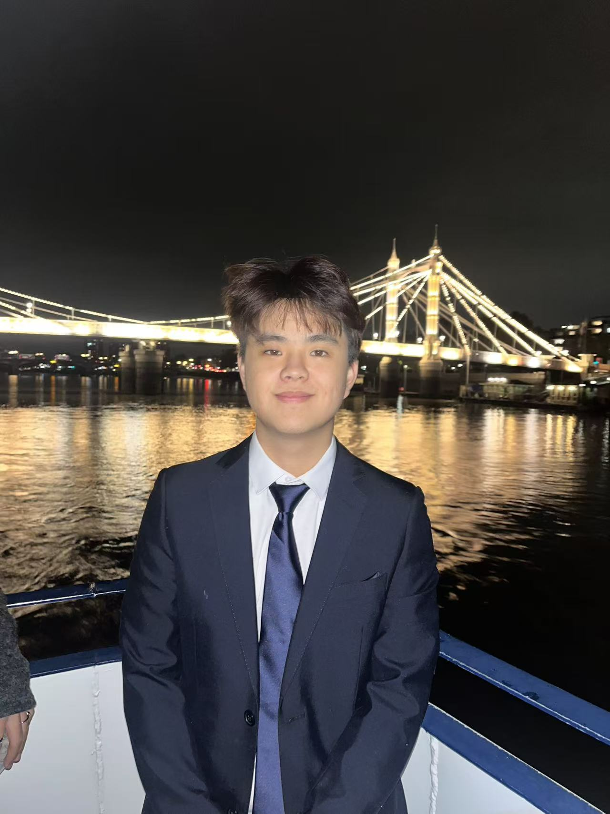
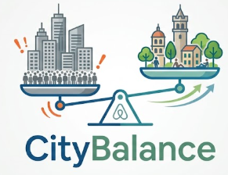

I'm a second-year BASc student at UCL studying Economics, Mathematics and Quantitative Methods.
My work sits at the intersection of structured analysis and human-centred thinking —
understanding how people interact with systems, finding where things break down, and designing solutions that actually fit how organisations and users work.
Service Design ThinkingUser Journey AnalysisData-Driven ResearchSystems MappingCross-Cultural Communication

Case Study 01
Business Consultant
Redesigning the Digital Engagement Journey for a Child Bereavement Charity
Analysed how website visitors, potential donors and community partners experienced
Richmond's Hope's digital presence — and designed a structured action framework
to close the gap between emotional storytelling and meaningful conversion.
ClientRichmond's Hope (via Blackmont Consulting)
TimelineJan – Feb 2026
My RoleLead Analyst — Digital Audit & Benchmarking
Discover
The charity told powerful stories — but visitors didn't know what to do next
Richmond's Hope supports bereaved children across Scotland. Their website communicated the emotional weight of their mission effectively, but I needed to understand whether this translated into action. I mapped the existing digital presence — website pages, social media channels, and public-facing content — against three core conversion pathways: donation, referral, and partnership enquiry.
User journey mapping revealed a critical disconnect between emotional engagement and conversion
Research
Benchmarking peer charities to understand what "good" looks like
I conducted a comparative analysis of peer child bereavement and youth support charities, examining how they structured their digital engagement across three dimensions: school partnerships (the primary referral channel), corporate partnerships (the primary funding channel), and community engagement. This research revealed clear patterns in how effective charities connected their mission narrative to specific, audience-tailored calls-to-action.
Key Insight
The most effective peer charities didn't simply add more CTAs — they designed audience-specific entry points. A school visitor needed safeguarding language and referral forms; a corporate visitor needed impact metrics and partnership tiers. Richmond's Hope used a single, generic narrative for all audiences.
Solution
A structured action framework mapping each audience to a conversion pathway
Rather than recommending a full website redesign (which exceeded the charity's capacity), I designed a prioritised action framework that mapped specific, implementable changes to each of the three conversion pathways. Each recommendation was scoped to the charity's existing resources and ranked by impact-to-effort ratio.
Action framework prioritising high-impact, low-effort changes across three conversion pathways
Outcome
A practical, capacity-aware roadmap the board could act on
The final deliverable was a client-facing presentation used by the charity's board to guide their digital strategy. The board's feedback highlighted that the prioritised, implementation-ready format was more useful than previous advice they had received, which had been too ambitious for their operational capacity.
3
Conversion pathways mapped
6
Peer charities benchmarked
9
Prioritised recommendations
Case Study 02
Systems Design & AI Strategy
CityBalance — Redirecting Airbnb's AI to Solve Overtourism
A strategic initiative proposal arguing that Airbnb's existing AI infrastructure should be repurposed
to actively disperse tourists toward undervisited neighbourhoods — addressing overtourism not as a volume
problem, but as a systemic design failure aligned with UN SDG 11 (Sustainable Cities and Communities).
ContextUCL MSIN0051 — Digital Strategy & Transformation
TimelineFeb – Apr 2026
Format12-min video presentation + process map

Consideration — Three Converging Threats
The Airbnb model is under threat from three simultaneous directions
The process map begins by tracing three parallel problem chains that converge into a single strategic imperative. First, unregulated short-term rentals deplete housing supply and drive up long-term rents, threatening SDG 11 housing affordability targets and triggering severe regulatory backlash including total platform bans. Second, Airbnb's massive market scale ($12.24B projected revenue) translates to millions of tourist arrivals concentrated in the same hotspots — Venice, Barcelona — creating a "touristification" crisis that erodes community life and evolves overtourism into a systemic social equity problem. Third, while Airbnb actively integrates AI for personalisation, its AI roadmap ignores tourist distribution entirely — a strategic gap that competitors like Booking.com are already exploiting with OpenAI-powered trip planners that surface lesser-known destinations.
Three parallel threat chains converge into a single strategic imperative for Airbnb
Key Insight
Airbnb already possesses the AI infrastructure to influence tourist distribution. Its algorithm was not designed to cause overtourism — but by optimising solely for booking conversion, it inadvertently concentrates visitors. The intervention requires reframing the objective of existing technology, not building new technology.
Proposal — Strategic SDG Pivot
Shifting the AI roadmap from booking conversion to tourist distribution management
The proposal centres on a strategic SDG pivot: repurposing Airbnb's AI to actively manage tourist distribution, targeting SDG 11.a (urban-rural linkages) and SDG 11.4 (heritage protection). The implementation flows through four connected components — an ML-based recommender engine analysing user profiles and congestion data, real-time IoT integration with foot traffic sensors and event calendars, a conditional scaling decision based on existing infrastructure, and an interactive mobile app with AR cultural content. A partnership layer connects Airbnb to local governments, the UN Tourism Observatory in Barcelona, and airline partners. The pilot launches in Salzburg before multi-city rollout.
Implementation flow with conditional IoT decision, Salzburg pilot, and multi-stakeholder partnership layer
Outcome — Four Stakeholder Impact Streams
Mapping outcomes to the people who matter
The outcome stage maps impact across four distinct stakeholder groups. For communities: redistributed visitor flows, alleviated infrastructure strain, and improved quality of life fulfilling SDG 11 targets. For local businesses: economic dispersal distributes footfall to peri-urban areas, boosting small businesses in undervisited neighbourhoods. For tourists: enhanced experiences with less overcrowding and more authentic cultural immersion, supporting SDG 11.4 heritage protection. For Airbnb strategically: competitive leadership in sustainable tech, regulatory goodwill with local governments, and long-term platform growth aligned with sustainability goals.
Four stakeholder streams with specific outcomes tied to SDG 11.a and SDG 11.4
Reflection
Technology is never neutral — its design encodes choices about who benefits
This project shaped my understanding of how digital platforms function as design interventions in urban spaces, whether intentionally or not. Building the process map across three stages — Consideration, Proposal, Outcome — forced me to think systemically: connecting macro-level industry forces through concrete technical proposals to measurable human outcomes across multiple stakeholder groups. The most impactful design change was not building new technology, but questioning whose interests existing technology serves — and reframing the problem through the lens of residents, local businesses, tourists, and the platform itself.